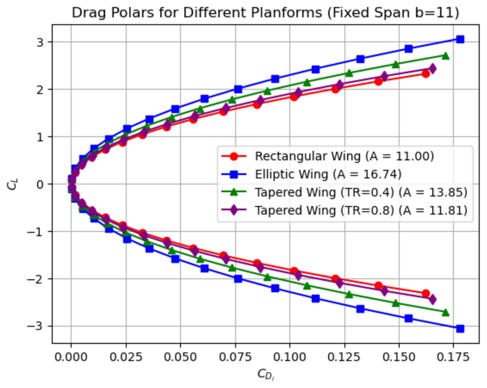
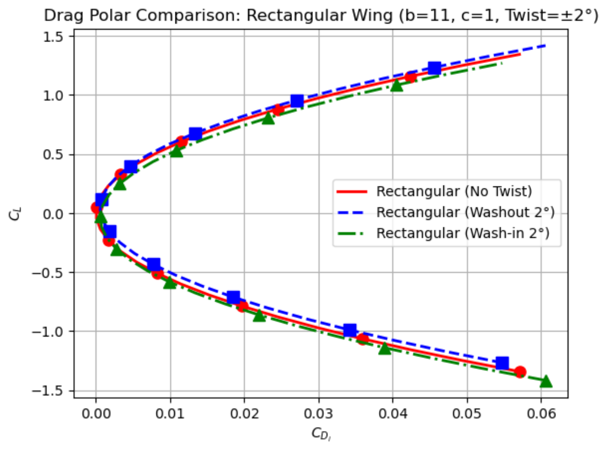

03 / Aerodynamic design trades / Preliminary design study
AE311 · Team lead · Three-person team
Finite-wing planform trade study
Organizing a constrained aircraft-design question into a tractable trade study, with an explicit distinction between a model-based recommendation and a finished wing.
- My contribution
- Team coordination, investigation scope, plot digitization, and technical documentation
- Tools
- Team leadership · Lifting-line theory · Python / Jupyter · Design trades
- Outcome
- Recommended 11 m span, 0.4 taper ratio, and no geometric twist

Frame a constrained decision
The scenario was a hypothetical small recreational aircraft with a maximum 12 m wingspan and manufacturing constraints that excluded an elliptical wing. The team compared simpler configurations using preliminary aerodynamic analysis.
As team lead and communicator, I coordinated scope, scheduling, and division of work. I also supported plot digitization, LaTeX equations, references, and report preparation, and contributed to discussions connecting the research to the design decision.
Explore planform, aspect ratio, and twist
The team’s Python/Jupyter model used Prandtl lifting-line theory, a horseshoe-vortex/downwash representation, and Fourier-series circulation to calculate lift, induced drag, and span efficiency.
The comparisons covered elliptical, rectangular, and two tapered planforms, along with aspect-ratio sweeps and ±2° geometric-twist cases. Benjamin McDonald was the technical lead responsible for the computational model; the report credits my contribution in coordination, analysis support, and documentation.
{kind=link}

Recommendation & scope
An 11 m span, 1 m root chord, 0.4 m tip chord, and no geometric twist.
That was the team’s preliminary recommendation within the hypothetical span and manufacturing constraints. The elliptical reference returned unit span efficiency, providing an idealized point of comparison.
The model assumes a straight, unswept wing without dihedral, small angles, and attached inviscid flow. Structural design, viscous effects, stall, and whole-aircraft behavior remained outside the study. No wing build or flight test is claimed.